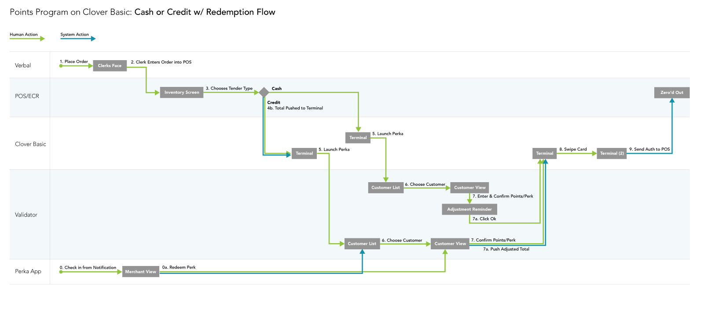
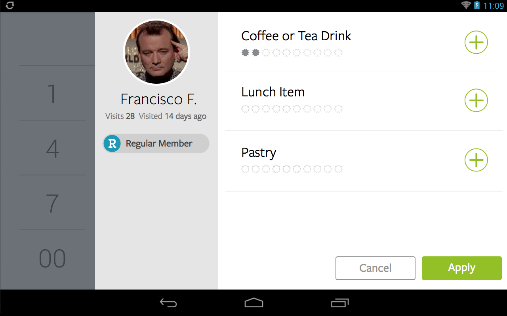
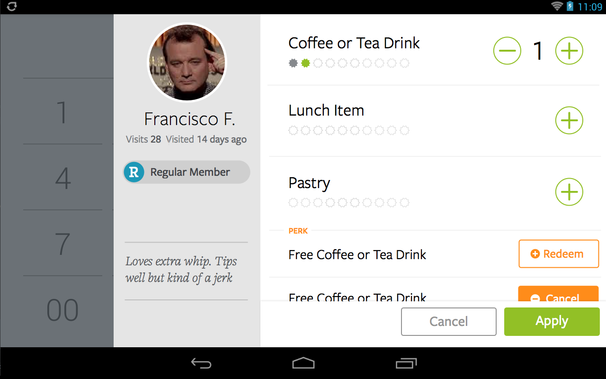
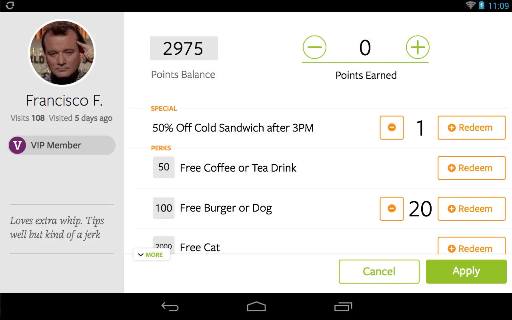

A checkout experience for the Perka reward that had to work across every version of the Clover terminal — and on none of it at all.
I was tasked with creating a seamless Perka checkout experience that would run on several versions of the Clover point-of-sale terminal. The solution needed to guide the clerk through the right series of steps to validate a transaction and apply any applicable discounts to the order.
Perka's integration with Clover had to update the amount a customer owes accurately, whether they paid cash or credit, and handle every moment a customer might choose to redeem a reward.
We didn't know how much data the system would have to work with. So we started at the worst case: a non-Clover device, no access to order data, the clerk redeeming a reward and applying the discount by hand. Adding capability back in one feature at a time gave us a set of task flows covering nearly every combination of hardware and half-built OS features we might land on.
Design the flow for the terminal that knows nothing, then let every smarter terminal collapse steps out of it.
A task flow with an adaptive experience depending on whether the validator knows the order total, inventory, and reward state.

Swimlanes let us plot both payment paths against what the customer sees in the app, what the clerk says out loud, and what the terminal is doing at the same moment. The screens below are the Clover-aware path, where the terminal can tell us the total.
Basic punch, step one: the clerk scans the customer code before the order is tendered.

Reward available. The discount is applied to the till automatically when the terminal exposes the total.

Confirmation state on the customer-facing display, and the receipt line the clerk reads back.

One flow shipped across four terminal configurations. Clerks stopped calculating discounts by hand on the two devices that supported it, and the manual path stayed intact for the ones that didn't.
One hour, screen shared, no deck. You leave with the three changes that matter most and the reasoning behind them.